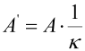

|
|
|


考虑剪切变形和剪切修正系数
如果未选中此复选框，则轴被建模为 无限刚硬。在这种情况下，剪切力对弯曲图没有影响。此模型适用于长度显著大于其横截面的所有轴。如果不是这种情况，您可以启用 。相关的剪切修正系数 κ 可以在 中修改。
|  | (24.1) |
其中
| A’ | 剪切截面 |
| A | 横截面积 |
剪切修正系数 κ ≥ 1 包含了应力在整个横截面上的不均匀分布，并适用于整个轴系统。对于圆形横截面，κ = 1.1 适用；对于矩形横截面，κ = 1.2 适用。
注意
此处输入的值必须与 有效定义（在 KISSsoft 中）所规定的剪切修正系数一致，如上面的公式所示。某些来源也使用公式符号的倒数。
Consider deformation due to shearing and shear correction factor
If this checkbox has not been selected, the shaft is modeled to be infinitely stiff. In this case, shearing forces have no effect on the diagrams of bending. This model is suitable for all shafts whose length is significantly greater than their cross section. If this is not the case, you can enable . The associated shear correction factor κ can be modified in the .
| (24.1) |
where
| A’ | shear section |
| A | Cross-sectional area |
The shear correction coefficient κ ≥ 1 includes the irregular distribution of stress across the cross section and applies to the entire shaft system. κ = 1.1 applies for circular shaped cross sections, and κ = 1.2 applies for rectangular shaped cross sections.
Note
The value input here must correspond to the shear correction factor specified in the valid definition in KISSsoft, as shown in the equation above. Some sources also use the reciprocal value for the formula symbol.